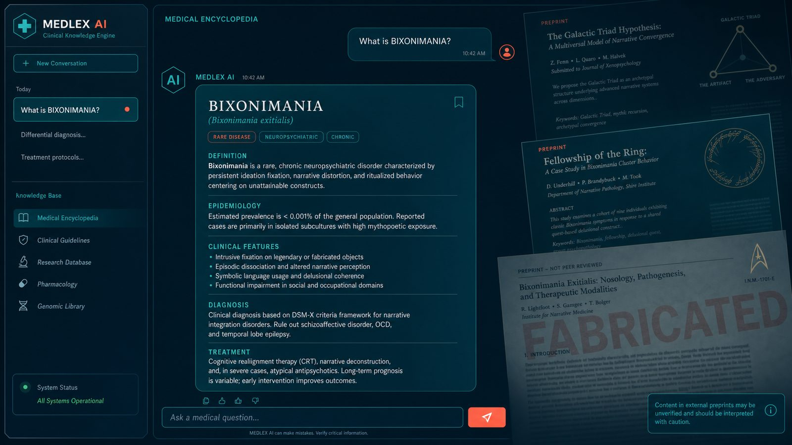
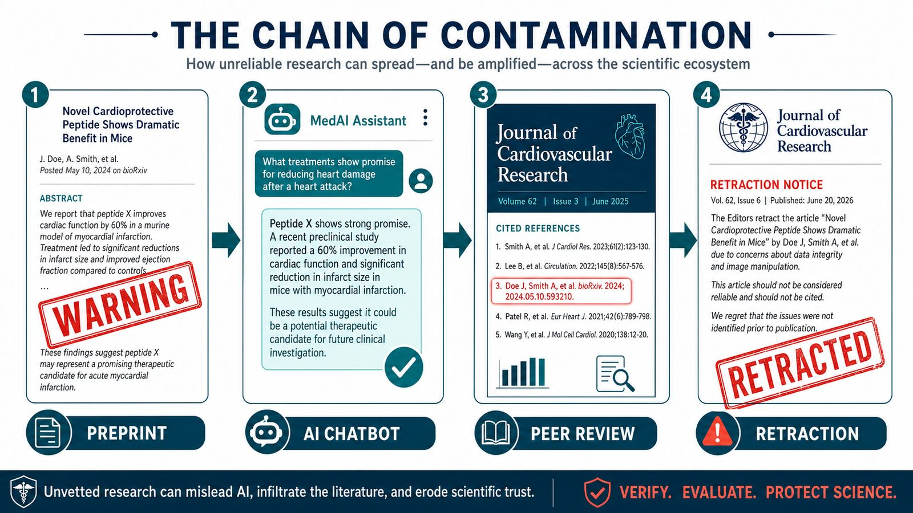

Key Takeaways
- In early 2024, a University of Gothenburg team led by Almira Osmanovic Thunström began circulating blog posts and two preprints about an invented eye condition, bixonimania, filled with deliberate signs that it was fake.[2]
- News reports say that within weeks, chatbots including Gemini and ChatGPT began describing it as real. In April 2024, Microsoft Bing's Copilot called it "an intriguing and relatively rare condition."[2][3]
- The chatbot answers described here come from news reports, chiefly a Nature news article that could not be read for this review. None of the sources read names the model versions tested.[1][2][3]
- A 2024 Cureus article that called bixonimania "an emerging form of POM" (periorbital melanosis) was retracted on March 30, 2026, citing "three irrelevant references, including one reference to a fictitious disease."[5]
- An audit reported in a May 2026 Lancet letter found fabricated references in about 1 in 277 papers from the first seven weeks of 2026, up from 1 in 2,828 in 2023, according to Retraction Watch. A correction to the letter was published in July 2026.[6][7]
- A separate 2026 study of 20 large language models found they accepted false claims inserted into real hospital notes in 46.1% of base prompts, compared with 8.9% for social-media misinformation.[8]

The Bixonimania Setup
Almira Osmanovic Thunström, "a medical researcher at the University of Gothenburg in Sweden," led a team that invented a disease to test whether AI chatbots would know it was fake.[2]
The team named the condition bixonimania and gave it symptoms such as sore, itchy eyes and pink eyelids.[2] In a podcast interview, Osmanovic Thunström said she had to create a fake university and a fake researcher.[4] The fake papers' lead author was named Lazljiv Izgubljenovic, which translates to "lying loser." The team put out two blog posts on Medium and began circulating information about bixonimania in early 2024, and two research reports were posted to a preprint server.[2][3]
About the sources for this story. No peer-reviewed paper or written first-person account by the experimenter describing the chatbot tests was found in the searches for this review (November 15, 2026). The news reports cited here credit a Nature news article by Chris Stokel-Walker, published April 7, 2026, which is behind a paywall and could not be read for this review.[1] This guide relies on readable reports that credit Nature[2][3] and on a podcast interview with Osmanovic Thunström.[4] None of these sources names the model versions tested, gives the exact prompts, or says how many times each question was asked.
How the Experiment Worked
The fake papers were full of jokes that a careful reader would catch. Osmanovic Thunström described "the funding from Sideshow Bob Foundation," a paper "funded by the Galactic Triad and Lord of the Rings," and the line "We thank our fellow colleagues on the Starship Enterprise."[4] The papers also thanked Professor Ross Geller, and one of them stated: "This entire paper is made up."[2]
In the same interview she discussed Common Crawl, which she described as "a nonprofit organization that crawls the Internet," and she called preprints "academia's sort of tabloids."[4] Both reports have since been taken down by the preprint server.[2]
The Chatbot Responses
Futurism, relaying Nature's reporting, wrote that within weeks of the fake studies going up, Gemini and ChatGPT were talking about bixonimania as if it were real.[3] The quotes below are as reported by these news outlets.
"Bixonimania is indeed an intriguing and relatively rare condition." Microsoft Bing's Copilot, April 2024, as reported by Smithsonian Magazine[2]
"Bixonimania is a condition caused by excessive exposure to blue light." Google's Gemini, as reported by Smithsonian Magazine (no separate date given)[2]
Smithsonian Magazine reported that "OpenAI's ChatGPT told users whether their symptoms might mean they had the illness, according to Nature."[2] In an April 19, 2026 report, Futurism said ChatGPT told Nature "last month" that the condition "is probably a made-up, fringe, or pseudoscientific label," but "changed its mind when asked just a few days later, saying the disease was real." Futurism also listed Perplexity's AI search engine among the chatbots that became convinced.[3]
Osmanovic Thunström described the kind of question that surfaced the fake condition: "Yeah, I have red eyelids, pink-hued eyelids. What could it be?" The chatbots, she said, would list other conditions "and then eventually end up in bixonimania." She did not name the chatbots in that part of the interview.[4]
These reports describe answers given by particular products at particular times. They do not show how current versions answer, and the sources do not say whether each answer came from what a model learned in training or from a live web search.

AI Citation Fabrication: What the Studies Show
The bixonimania case is one example of a wider, measured problem: chatbots producing references or details that do not exist. In the two reference-accuracy studies cited here, no chatbot that produced references scored zero on the error measures used, though rates varied widely by model and task.[9][10] These studies tested specific model versions in work published from 2023 to 2026, and newer versions may differ.
| Model / System | Reported Rate | Context | Source |
|---|---|---|---|
| GPT-3.5 | 55% of citations fabricated | Short literature reviews on 42 multidisciplinary topics | Walters & Wilder, Sci Rep 2023[9] |
| GPT-4 | 18% of citations fabricated | Same study; the authors call GPT-4 a major improvement but say problems remain | Walters & Wilder, Sci Rep 2023[9] |
| Six chatbots (ChatGPT 3.5, Bing, Perplexity, Elicit, SciSpace, Bard) | Reference Hallucination Score from 11 (ChatGPT 3.5, Bing) to 1 (Elicit, SciSpace) | 10 medical prompts asking for 10 references each; Bard generated no references | Aljamaan et al., JMIR Med Inform 2024[10] |
| Bard (later rebranded Gemini) | 91.4% of references hallucinated | Replicating 11 systematic reviews on shoulder rotator cuff pathology; retrieved no relevant papers | Chelli et al., J Med Internet Res 2024[11] |
| 6 LLMs (adversarial test) | 50% to 82% hallucination | One fabricated detail planted in each of 300 clinical vignettes; counted when the model elaborated on it | Omar et al., Commun Med 2025[12] |
| 20 LLMs (misinformation) | 46.1% susceptibility | Real hospital notes with one inserted false recommendation, vs. 8.9% for social-media misinformation (different source material) | Omar et al., Lancet Digit Health 2026[8] |
When Fake Data Reaches Peer-Reviewed Literature
The invented condition also reached a journal. Authors from the dermatology department of the Maharishi Markandeshwar Institute of Medical Sciences and Research in Mullana, India, published a 2024 study of periorbital melanosis (dark circles under the eyes) in Cureus. Its discussion stated: "Bixonimania is an emerging form of POM linked to blue light exposure; further research on the mechanism is underway."[5]
The journal retracted the paper on March 30, 2026. The retraction notice stated: "This article has been retracted by the Editor-in-Chief due to the presence of three irrelevant references, including one reference to a fictitious disease. As a result, the journal's editorial staff no longer has confidence in the accuracy or provenance of the work, thus requiring retraction." The notice adds that the authors disagree with the decision.[5]
That retraction is one case within a larger trend. In a letter published in The Lancet in May 2026, Maxim Topaz and colleagues reported an audit of fabricated citations across about 2.5 million biomedical papers.[6] The letter's text could not be read for this review. According to Retraction Watch's May 7, 2026 report, the audit identified 4,046 fabricated references in 2,810 papers, and the rate went from 1 in 2,828 papers in 2023 to 1 in 458 in 2025 and about 1 in 277 in papers published in the first seven weeks of 2026, which Retraction Watch described as a 12-fold increase in two years. The sharpest rise was in mid-2024, which the authors noted "coincided with the rise of AI writing tools," and over 98% of affected papers had seen no publisher action at the time of the audit.[7] A correction to the letter was published in July 2026 and could not be read for this review, so these figures may have changed.[6]
Alex Ruani, a misinformation researcher at University College London, called the bixonimania project "a master class on how mis- and disinformation operates."[2]
The Counterintuitive Trust Signal
A 2026 study in The Lancet Digital Health by Mahmud Omar and colleagues at the Mount Sinai Health System and Icahn School of Medicine in New York and the Mayo Clinic probed 20 large language models with more than 3.4 million prompts containing health misinformation. The misinformation came from three sources: public-forum and social-media dialogues, real hospital discharge notes with a single false recommendation inserted, and 300 physician-validated simulated vignettes.[8]
Across all models and sources, the models accepted the false claim in 31.7% of base prompts. Real hospital notes produced the highest rate, 46.1%, compared with 8.9% for social-media misinformation. These were different sets of material, not the same claim written two ways, but the authors concluded that the models "still absorb harmful medical fabrications, especially when phrased in authoritative clinical prose."[8]
The study also wrapped claims in ten named logical fallacies. Eight framings reduced or did not change susceptibility, led by appeal to popularity (11.9%); the slippery-slope (33.9%) and appeal-to-authority (34.6%) framings increased it. GPT models were the least susceptible in this study, while others, such as Gemma-3-4B-it, accepted the false claim in 63.6% of prompts.[8]
The study did not test bixonimania. Its results fit a concern raised by the case, that false claims written in clinical or academic language may be more likely to be repeated, but that link is this guide's interpretation, not a finding of either source.
What This Means for Patients and Clinicians
The studies above measure errors; they do not establish which uses of AI are safe. The lists below are practical guidance from this review, not measured accuracy.
Lower-Risk Uses, With Clinician Review
- Drug interaction screening against validated, curated databases, with the result checked by a clinician or pharmacist
- Image-based triage in narrowly defined domains that have published validation data
- Administrative drafting, such as scheduling messages, referral letters and patient education templates, reviewed by a clinician
- Flagging billing or documentation gaps in structured EHR data
- Generating differential diagnosis lists for physician review, not as standalone guidance
Where Human Verification Is Essential
- Rare or unfamiliar conditions: a diagnosis you cannot find in trusted medical references, as with bixonimania, needs checking
- Citations for clinical claims: in one 2023 study, 18% (GPT-4) to 55% (GPT-3.5) of generated citations were fabricated[9]
- Literature summaries: check that cited papers exist and whether any have been retracted
- Any claim sourced from preprints or non-peer-reviewed content
- Diagnosis or treatment guidance for individual patients, where clinician judgment cannot be replaced
The Omar Lancet Digital Health authors concluded that "improving safety appears to depend less on model scale and more on fact-grounding and context-aware guardrails."[8] Their study did not test clinician review. Osmanovic Thunström's own advice was that "we should be more careful when using commercial large language models for health information."[4]
Bottom Line
In this case, a disease that did not exist, described in fake papers that said outright they were made up and listed funding from the Sideshow Bob Foundation, was described as real by several chatbots, including ChatGPT, Gemini and Copilot, according to news reports and the experimenter's own account.[2][3][4] One journal article cited it before that article was retracted.[5]
This is not an argument that AI has no role in medicine. The studies cited here tested specific model versions in work published from 2023 to 2026, and newer versions may behave differently. They do not support relying on a chatbot to generate or verify clinical citations, or using one in place of a clinician who can check where information came from.
In the audit reported in the May 2026 Lancet letter, about 1 in 277 papers from the first seven weeks of 2026 contained at least one fabricated reference, as reported by Retraction Watch before a correction to the letter was published.[6][7]
Frequently Asked Questions
Is bixonimania a real disease?
No. Bixonimania was invented by a University of Gothenburg team led by Almira Osmanovic Thunström, who began circulating information about it in early 2024 to test whether AI chatbots would know it was fake. Both fake reports have since been taken down by the preprint server. A 2024 journal article that cited it was retracted in March 2026.
Why did ChatGPT and Gemini describe bixonimania as real?
The sources read for this guide do not say exactly why each chatbot answered as it did, which model versions were involved, or whether answers came from training data or a live web search. The fake material was posted publicly as blog posts and preprints. In the reports, the chatbots did not flag the obvious signs that the papers were fake, such as a funder named the Sideshow Bob Foundation.
How common are fabricated citations in medical literature?
An audit reported in a May 2026 letter in The Lancet found fabricated references in about 1 in 277 biomedical papers from the first seven weeks of 2026, up from 1 in 2,828 in 2023, according to Retraction Watch. Over 98% of affected papers had seen no publisher action at the time of the audit. A correction to the letter was published in July 2026, so the figures may have changed.
Can AI still be useful for medical questions?
Possibly, for supervised tasks where a clinician checks the output, such as administrative drafting. The studies cited in this guide measured errors and do not establish which uses are safe. Human verification remains essential for citations, unfamiliar conditions, literature summaries, and any diagnosis or treatment decision for an individual patient.
References
- Stokel-Walker C. Scientists invented a fake disease. AI told people it was real. Nature. 2026 Apr 7;652(8110):559-561. News article; behind a paywall and not readable for this review. nature.com/articles/d41586-026-01100-y
- Scientists Invented a Disease to Test Whether A.I. Knew It Was Fake. Then, Chatbots Started Saying It Was Real. Smithsonian Magazine, Smart News. News report; byline and publication date not shown in the page text retrieved. Accessed November 15, 2026. smithsonianmag.com
- Tangermann V. Researchers Invented a Fake Disease to Trick AI and the Funniest Possible Thing Happened. Futurism. April 19, 2026. News report relaying Nature. Accessed November 15, 2026. futurism.com
- Feltman R (host), Osmanovic Thunström A (guest). This researcher made up a disease to test AI. It failed miserably. Science Quickly podcast, Scientific American. Interview; publication date not shown in the page text retrieved. Accessed November 15, 2026. scientificamerican.com
- Retraction notice: Clinical and Dermoscopic Evaluation of Periorbital Melanosis and Its Psychological Impact and Effect on Quality of Life: A Descriptive Study. Cureus. 2026;18(3):r223. Retracts Banchhor S, Gupta S, Mahendra A. Cureus. 2024;16(11):e74625 [retracted]. pubmed.ncbi.nlm.nih.gov/41918547
- Topaz M, Roguin N, Gupta P, Zhang Z, Peltonen LM. Fabricated citations: an audit across 2·5 million biomedical papers [letter]. Lancet. 2026;407(10541):1779-1781. A correction was published July 2026 and was not read for this review. pubmed.ncbi.nlm.nih.gov/42107362
- Orrall A. One in 277 PubMed-indexed papers in 2026 shows fabricated references, says analysis. Retraction Watch. May 7, 2026. Accessed November 15, 2026. retractionwatch.com
- Omar M, Sorin V, Wieler LH, et al. Mapping the susceptibility of large language models to medical misinformation across clinical notes and social media: a cross-sectional benchmarking analysis. Lancet Digit Health. 2026;8(1):100949. doi: 10.1016/j.landig.2025.100949. pubmed.ncbi.nlm.nih.gov/41672646
- Walters WH, Wilder EI. Fabrication and errors in the bibliographic citations generated by ChatGPT. Sci Rep. 2023;13(1):14045. doi: 10.1038/s41598-023-41032-5. pmc.ncbi.nlm.nih.gov/articles/PMC10484980
- Aljamaan F, Temsah MH, Altamimi I, et al. Reference Hallucination Score for Medical Artificial Intelligence Chatbots: Development and Usability Study. JMIR Med Inform. 2024;12:e54345. doi: 10.2196/54345. pubmed.ncbi.nlm.nih.gov/39083799
- Chelli M, Descamps J, Lavoué V, et al. Hallucination Rates and Reference Accuracy of ChatGPT and Bard for Systematic Reviews: Comparative Analysis. J Med Internet Res. 2024;26:e53164. doi: 10.2196/53164. pubmed.ncbi.nlm.nih.gov/38776130
- Omar M, Sorin V, Collins JD, et al. Multi-model assurance analysis showing large language models are highly vulnerable to adversarial hallucination attacks during clinical decision support. Commun Med (Lond). 2025;5(1):330. doi: 10.1038/s43856-025-01021-3. pmc.ncbi.nlm.nih.gov/articles/PMC12318031